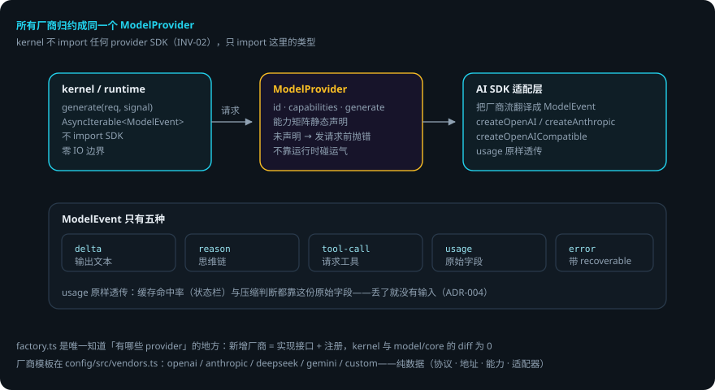

DOMI · DOCS
模型运行时
本页回答四个问题：模型层怎么统一？能力矩阵怎么用？结构化输出和重试怎么兜底？出错了会怎样？
packages/model—— ModelProvider 接口、AI SDK 适配、能力矩阵、结构化输出、重试。 贯穿例子：给登录接口加限流——domi 每轮调用模型，输出流式回到事件流。
先说结论
- 所有厂商都归约成同一个
ModelProvider。kernel 只认识这一个接口。 ModelEvent只有五种：delta/reason/tool-call/usage/error。- 能力矩阵静态声明：调用未声明的能力在发请求前就抛错，不靠运行时碰运气。
providerOptions与原始usage原样透传——适配层不做字段归一、不丢字段。factory.ts是唯一知道「有哪些 provider」的地方：新增厂商只需实现接口 + 注册，kernel 与 model/core 的 diff 为 0。- 自定义
fetch可注入：企业代理 / mTLS / 测试截流（不能靠改globalThis.fetch——AI SDK 在模块加载时就把它抓走了）。
用到的词
| 词 | 意思 |
|---|---|
| ModelProvider | kernel 认识的唯一模型接口。 |
| ModelEvent | 模型输出的统一事件（五种）。 |
| 能力矩阵 | 静态声明的模型能力（toolCall / vision 等）。 |
| 适配器 | 把 AI SDK 的流翻译成 ModelEvent 的层。 |
| 厂商模板 | 纯数据的厂商配置（协议 / 地址 / 能力 / 适配器）。 |
1. 总体流程

2. ModelProvider：kernel 认识的唯一接口
interface ModelProvider {
readonly id: string
readonly capabilities: ModelCapabilities // 静态声明的能力矩阵
generate(req: ModelRequest, signal: AbortSignal): AsyncIterable<ModelEvent>
}
kernel 不 import 任何 provider SDK（INV-02），只 import 这里的类型。
ModelEvent 五种：
| 类型 | 含义 |
|---|---|
delta |
输出文本增量 |
reason |
思维链文本 |
tool-call |
请求调用工具 |
usage |
用量（原始字段，原样透传） |
error |
错误（带 recoverable 标记） |
两个关键设计：
- 能力矩阵静态声明（toolCall / vision / reasoning / promptCache / structuredOutput）。调用未声明的能力在发请求前抛错——不靠运行时碰运气。如果模型其实支持（常见于自定义网关），在「设置 › 模型供应商」或
config.yaml的providers.${provider}.capabilities里显式打开。 - ADR-004 逃生口：
providerOptions与原始usage原样透传。缓存命中率（状态栏）与压缩时保住 prompt cache 前缀的判断都靠这份原始 usage——丢了就没有输入。
3. 工厂与厂商模板
factory.ts 是唯一知道「有哪些 provider」的地方。实现经 AI SDK（ai-sdk-provider.ts）：createOpenAI / createAnthropic / createOpenAICompatible。
厂商知识在 packages/config/src/vendors.ts（guard:providers 扫全仓，SDK 包名只允许出现在 factory.ts）：
| 厂商 | 协议 / 适配 |
|---|---|
| openai | 官方 Responses API |
| anthropic | 官方 |
| deepseek | openai 兼容 |
| gemini | 官方 |
| custom | 自选协议 |
每个模板是纯数据：协议、默认地址、默认能力、惯用环境变量名、用哪种适配器。
connectionShape(cfg)：vendor + protocol + adapter 三者的解析。createProvider(conn, name)：配置 → Provider 实例；providerConfigOf把providerConnection变成工厂参数。- 自定义
fetch的注入点：企业代理 / mTLS / 测试截流。
4. 结构化输出与重试
| 模块 | 干什么 |
|---|---|
structured.ts |
统一走 JSON Schema；对不支持 structured output 的模型用「Zod schema → 提示词约束 + 解析重试」兜底，接口对上层一致（generateStructured / StructuredOutputError） |
retry.ts |
可恢复错误的有限重试（流式中断等） |
probe.ts |
/v1/models 探测（模型清单自动发现；探测失败用配置里的 models 清单兜底） |
embedding.ts |
L3 语义记忆的向量嵌入（嵌入不支持 → EmbeddingUnsupportedError，语义检索降级 FTS） |
stub-provider.ts |
CI 里的模型替身（真实 LLM 调用不进 CI 门禁） |
5. 出错了怎么办：限流做到第 2 步，模型流中断了
- 流式中断。
retry.ts判定为可恢复错误 → 有限重试（有次数上限）。重试仍失败 → 落model.delta流的error事件。 - 调用了未声明的能力。发请求前抛错——不是等到响应才失败。去配置里显式打开该能力。
- 嵌入不支持。
EmbeddingUnsupportedError→ 语义检索降级 FTS 全文检索，记忆功能继续可用。 - 探测失败（模型清单发现不了）。用配置里的
models清单兜底。 - 模型返回不可解析的结构化输出。
StructuredOutputError→ 按提示词约束重试解析；仍失败则上层按错误处理。
一张表看全部情况
| 情况 | domi 做什么 | 你要做什么 |
|---|---|---|
| 流式中断 | 有限重试；仍失败落 error 事件 | 不用管（或看轨迹） |
| 能力未声明 | 发请求前抛错 | 在配置里显式打开 |
| 嵌入不支持 | 降级 FTS | 不用管 |
| 模型清单探测失败 | 用配置 models 兜底 | 在配置里写明 models |
| 结构化输出解析失败 | 重试解析；仍失败按错误处理 | 不用管 |
6. 可靠性靠什么
- 接口单一。所有厂商归约成一个 ModelProvider，kernel 不用知道厂商差异。
- 能力静态声明。错配在发请求前暴露，不是运行中。
- usage 原样透传。缓存命中判断依赖原始字段，透传保证不丢输入。
- 兜底阶梯。结构化输出有提示词约束兜底；嵌入有 FTS 兜底；探测有配置兜底。
- CI 用替身。真实 LLM 不进 CI 门禁，测试确定性由 stub-provider 保证。
已知限制
- 厂商能力差异靠显式声明解决：声明错了（关掉实际支持的能力）会拒绝可用路径。
- 自定义 fetch 必须走注入点，改
globalThis.fetch无效（AI SDK 模块加载时已抓走）。 - 结构化输出兜底（提示词约束）不保证 100% 解析成功。
- 探测只认
/v1/models形态，非标准网关需配置兜底。
代码在哪里
| 主题 | 位置 |
|---|---|
| ModelProvider 接口与 ModelEvent | packages/model/src/provider.ts |
| 能力矩阵 | packages/model/src/capability.ts |
| AI SDK 适配 | packages/model/src/ai-sdk-provider.ts |
| 厂商注册表（唯一） | packages/model/src/factory.ts |
| 厂商模板 | packages/config/src/vendors.ts |
| 结构化输出 / 重试 / 探测 / 嵌入 | packages/model/src/{structured,retry,probe,embedding}.ts |
| CI 模型替身 | packages/model/src/stub-provider.ts |
测试：packages/model/test/（能力矩阵、结构化输出、重试、factory 注册表；全部打桩）。